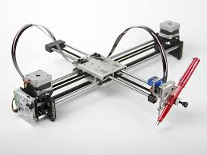
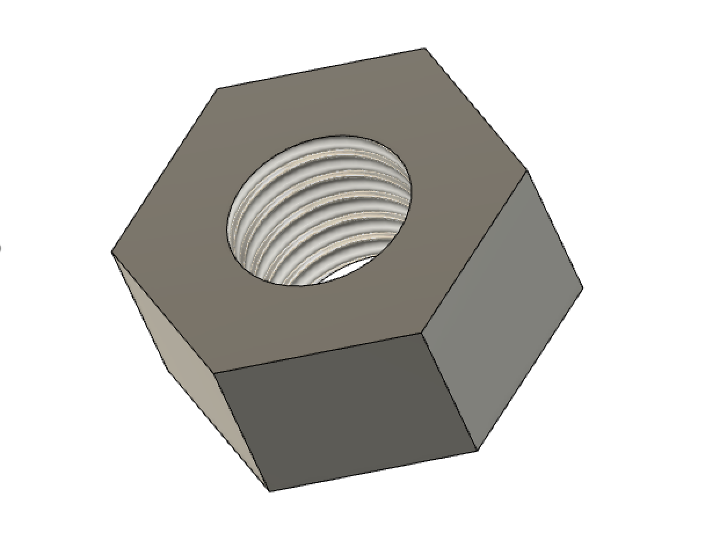

Facts About Me:
I was born in Jamaica
I'm 16 years old and I'm going to 12th grade
I love hanging out with my family and friends/ Having fun in general
I like to draw
I want to be a Pediatrician
I love working with children! (I currently work at a daycare :)
Here is an example of a drawing machine that I could possibly replicate as a final project.

Here's A Bolt

So far in fusion 360, I've learned how to properly create different 3D figures as well as 2D figures. However, I struggled with putting the revolutions on the bolt to get that sort of round surface. But I think I will get the hang of it the more I use it!
Click Here For Homepage link.